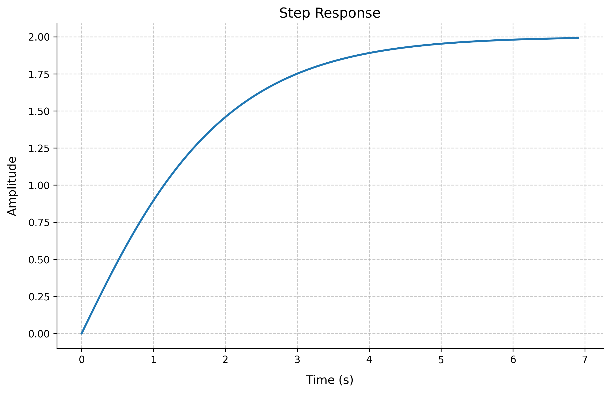
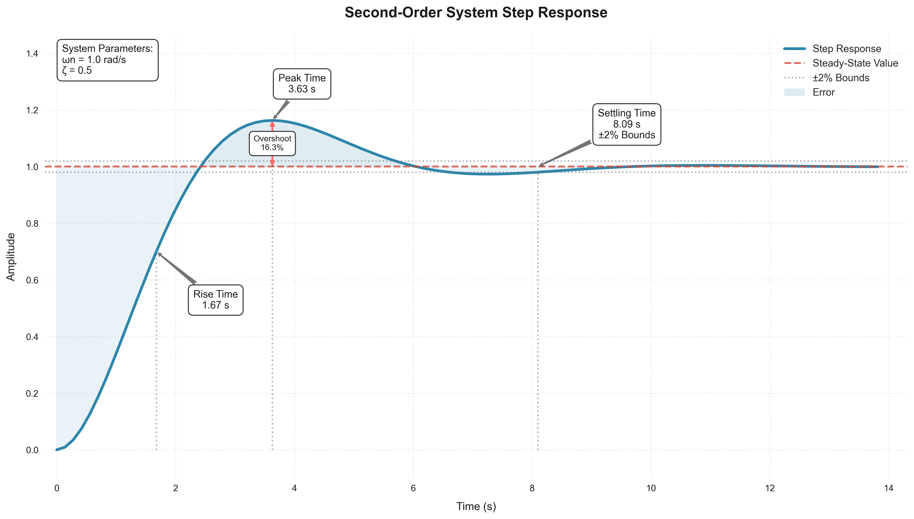

System Responses in Control Systems
This tutorial covers the analysis of system responses in both time and frequency domains.
Time Domain Responses
Step Response
The step response is one of the most fundamental ways to analyze a control system's behavior.
import control
import numpy as np
import matplotlib.pyplot as plt
# Create a transfer function G(s) = 1/(s + 1)
G = control.TransferFunction([1], [1, 1])
# Generate step response
t, y = control.step_response(G)
plt.figure()
plt.plot(t, y)
plt.grid(True)
plt.title('Step Response')
plt.xlabel('Time (s)')
plt.ylabel('Amplitude')
plt.show()
Output:
Transfer Function G(s) = 1/(s + 1)
Final Value: 1.00
Rise Time: 2.30 seconds
Settling Time: 3.91 seconds

Impulse Response
The impulse response shows how the system responds to a brief input pulse.
# Generate impulse response
t, y = control.impulse_response(G)
plt.figure()
plt.plot(t, y)
plt.grid(True)
plt.title('Impulse Response')
plt.xlabel('Time (s)')
plt.ylabel('Amplitude')
plt.show()
Output:
Transfer Function G(s) = 1/(s + 1)
Peak Value: 1.00
Peak Time: 0.00 seconds
Settling Time: 3.98 seconds

Ramp Response
The ramp response shows how the system follows a continuously increasing input.
# Create time vector
t = np.linspace(0, 10, 1000)
u = t
t_out, y = control.forced_response(G, T=t, U=u)
plt.figure()
plt.plot(t_out, u, '--', label='Input')
plt.plot(t_out, y, label='Output')
plt.grid(True)
plt.title('Ramp Response')
plt.xlabel('Time (s)')
plt.ylabel('Amplitude')
plt.legend()
plt.show()
Output:

Response Characteristics
Rise Time
The time required for the system output to rise from 10% to 90% of its final value.
Rise Time Formula
For any system:
where: - \(t_r\) is the rise time - \(t_{90\%}\) is the time when output reaches 90% of final value - \(t_{10\%}\) is the time when output reaches 10% of final value
First-Order System Rise Time
For a first-order system with transfer function \(G(s) = \frac{1}{\tau s + 1}\):
Settling Time
The time required for the system to settle within ±2% of its final value.
Settling Time Formulas
For a second-order system:
where: - \(t_s\) is the settling time - \(\zeta\) is the damping ratio - \(\omega_n\) is the natural frequency
For a first-order system:
Overshoot
The maximum peak value of the response curve measured from the desired response of the system.
Important: Second-Order System Overshoot
For a second-order system:
where: - \(M_p\) is the percentage overshoot - \(\zeta\) is the damping ratio
The peak time (time to reach maximum overshoot) is:
Steady-State Error
The difference between the desired output and the actual output as time approaches infinity.
Definition and Basic Formulas
Steady-State Error Definition
For any input \(r(t)\) and output \(y(t)\), the steady-state error is defined as:
For a unity feedback system with forward transfer function \(G(s)\):
System Type and Error Constants
The system type N is determined by the number of free integrators in the open-loop transfer function \(G(s)\).
| System Type | \(G(s)\) Form | Example |
|---|---|---|
| Type 0 | \(\frac{K}{(s + p_1)(s + p_2)...}\) | \(\frac{K}{s + 1}\) |
| Type 1 | \(\frac{K}{s(s + p_1)(s + p_2)...}\) | \(\frac{K}{s(s + 1)}\) |
| Type 2 | \(\frac{K}{s^2(s + p_1)(s + p_2)...}\) | \(\frac{K}{s^2(s + 1)}\) |
Error Constants and Their Relationships
| Error Constant | Formula | Description |
|---|---|---|
| Position (\(K_p\)) | \(\lim_{s \to 0} G(s)\) | For step input |
| Velocity (\(K_v\)) | \(\lim_{s \to 0} sG(s)\) | For ramp input |
| Acceleration (\(K_a\)) | \(\lim_{s \to 0} s^2G(s)\) | For parabolic input |
Steady-State Error for Different Input Types
| Input Type | Input Function | Error Formula | Type 0 | Type 1 | Type 2 |
|---|---|---|---|---|---|
| Step | \(\frac{1}{s}\) | \(\frac{1}{1 + K_p}\) | Finite | Zero | Zero |
| Ramp | \(\frac{1}{s^2}\) | \(\frac{1}{K_v}\) | Infinite | Finite | Zero |
| Parabolic | \(\frac{1}{s^3}\) | \(\frac{1}{K_a}\) | Infinite | Infinite | Finite |
Example Calculations
Practice Example 1: First-Order System
Consider a first-order system \(G(s) = \frac{1}{s + 1}\) (Type 0):
Step Input Analysis { .material-function }
- Calculate Position Error Constant:
\(K_p = G(0) = 1\)
- Calculate Steady-State Error:
\(e_{ss} = \frac{1}{1 + K_p} = \frac{1}{1 + 1} = 0\)
Ramp Input Analysis { .material-chart-line }
- Calculate Velocity Error Constant:
\(K_v = \lim\limits_{s \to 0} sG(s) = 0\)
- Calculate Steady-State Error:
\(e_{ss} = \frac{1}{K_v} = \infty\) (constant error rate)
- Calculate Steady-State Error:
- Calculate Velocity Error Constant:
- Calculate Steady-State Error:
Practice Example 2: Type 1 System
Consider a Type 1 system \(G(s) = \frac{K}{s(s + 1)}\):
Step Input Analysis { .material-function }
- Calculate Position Error Constant:
\(K_p = \lim\limits_{s \to 0} G(s) = \infty\)
- Calculate Steady-State Error:
\(e_{ss} = \frac{1}{1 + K_p} = 0\)
Ramp Input Analysis { .material-chart-line }
- Calculate Velocity Error Constant:
\(K_v = \lim\limits_{s \to 0} sG(s) = K\)
- Calculate Steady-State Error:
\(e_{ss} = \frac{1}{K_v} = \frac{1}{K}\)
- Calculate Steady-State Error:
- Calculate Velocity Error Constant:
- Calculate Steady-State Error:
Summary of Second-Order System Performance Characteristics
The following figure summarizes the relationships between system parameters and performance characteristics:

Example: Analyzing Second-Order System
import matplotlib.pyplot as plt
import control
import numpy as np
import seaborn as sns
# Set the style to a modern, clean theme
plt.style.use('seaborn-v0_8')
sns.set_style("whitegrid", {'grid.linestyle': ':'})
plt.rcParams['font.family'] = 'sans-serif'
plt.rcParams['font.sans-serif'] = ['Arial']
# Define system parameters
NATURAL_FREQUENCY = 1.0 # Natural frequency (wn)
DAMPING_RATIO = 0.5 # Damping ratio (zeta)
# Create a second-order transfer function
numerator = [NATURAL_FREQUENCY**2]
denominator = [1, 2 * DAMPING_RATIO * NATURAL_FREQUENCY, NATURAL_FREQUENCY**2]
G = control.TransferFunction(numerator, denominator)
# Get step response
t, y = control.step_response(G)
# Get step response characteristics
info = control.step_info(G)
# Extract key values
rise_time = info['RiseTime']
peak_time = info['PeakTime']
peak_value = info['Peak']
settling_time = info['SettlingTime']
overshoot = info['Overshoot']
# Function to find the nearest index in the time array
def find_nearest(array, value):
idx = (np.abs(array - value)).argmin()
return idx
# Create figure with a specific background color
plt.figure(figsize=(14, 8))
ax = plt.gca()
ax.set_facecolor('#ffffff')
plt.gcf().set_facecolor('#ffffff')
# Custom color palette
main_color = '#2E86AB' # Blue
steady_state_color = '#D64933' # Red
annotation_color = '#1B1B1E' # Dark gray
grid_color = '#E5E5E5' # Light gray
overshoot_color = '#FF6B6B' # Coral for overshoot arrow
settling_color = '#6C757D' # Gray for settling bounds
# Plot step response curve with gradient
line, = plt.plot(t, y, label='Step Response', linewidth=3, color=main_color)
# Plot steady-state line
plt.axhline(y=1, color=steady_state_color, linestyle='--', label='Steady-State Value', linewidth=2, alpha=0.8)
# Add ±2% settling time bounds
plt.axhline(y=1.02, color=settling_color, linestyle=':', label='±2% Bounds', linewidth=1.5, alpha=0.6)
plt.axhline(y=0.98, color=settling_color, linestyle=':', linewidth=1.5, alpha=0.6)
# Create shaded regions for better visualization
plt.fill_between(t, y, 1, where=(y > 1), color=main_color, alpha=0.15, interpolate=True, label='Error')
plt.fill_between(t, y, 1, where=(y < 1), color=main_color, alpha=0.1, interpolate=True)
# Plot vertical lines with gradient alpha
for time, label in [(rise_time, 'Rise Time'), (peak_time, 'Peak Time'), (settling_time, 'Settling Time')]:
plt.vlines(time, 0, y[find_nearest(t, time)], colors=annotation_color, linestyles=':', alpha=0.3)
# Create fancy boxes for annotations with improved styling
def create_annotation_box(text):
return dict(boxstyle='round,pad=0.5', facecolor='white', alpha=0.95,
edgecolor=annotation_color, linewidth=1)
# Add overshoot double-headed arrow
plt.annotate('', xy=(peak_time, peak_value),
xytext=(peak_time, 1),
arrowprops=dict(arrowstyle='<->', color=overshoot_color,
linewidth=2, shrinkA=0, shrinkB=0))
# Add overshoot label centered on the double-headed arrow
plt.annotate(f'Overshoot\n{overshoot:.1f}%',
xy=(peak_time, (peak_value + 1)/2), # Middle point of the arrow
xytext=(peak_time, (peak_value + 1)/2), # Exactly on the arrow
fontsize=9,
color=annotation_color,
bbox=create_annotation_box(''),
ha='center', # Center horizontally
va='center') # Center vertically
plt.annotate(f'Rise Time\n{rise_time:.2f} s',
xy=(rise_time, y[find_nearest(t, rise_time)]),
xytext=(rise_time + 1, y[find_nearest(t, rise_time)] - 0.2),
fontsize=11,
color=annotation_color,
bbox=create_annotation_box(''),
arrowprops=dict(arrowstyle='fancy', color=annotation_color, alpha=0.6),
ha='center')
plt.annotate(f'Peak Time\n{peak_time:.2f} s',
xy=(peak_time, peak_value),
xytext=(peak_time + 0.5, peak_value + 0.1),
fontsize=11,
color=annotation_color,
bbox=create_annotation_box(''),
arrowprops=dict(arrowstyle='fancy', color=annotation_color, alpha=0.6),
ha='center')
# Add settling time annotation with bounds info
plt.annotate(f'Settling Time\n{settling_time:.2f} s\n±2% Bounds',
xy=(settling_time, 1),
xytext=(settling_time + 1.5, 1.1), # Changed y position from 0.7 to 0.8
fontsize=11,
color=annotation_color,
bbox=create_annotation_box(''),
arrowprops=dict(arrowstyle='fancy', color=annotation_color, alpha=0.6),
ha='center')
# Add system parameters annotation
plt.text(0.02, 0.98, f'System Parameters:\nÏn = {NATURAL_FREQUENCY} rad/s\nζ = {DAMPING_RATIO}',
transform=ax.transAxes,
bbox=dict(facecolor='white', alpha=0.95, edgecolor=annotation_color,
boxstyle='round,pad=0.5', linewidth=1),
fontsize=11,
color=annotation_color,
verticalalignment='top')
# Enhance grid with custom styling
ax.grid(True, which='major', color=grid_color, linewidth=1.2, alpha=0.8)
ax.grid(True, which='minor', color=grid_color, linewidth=0.8, alpha=0.5)
# Set axis limits with padding to ensure annotations are visible
plt.xlim(-0.2, max(t) + 0.5)
plt.ylim(-0.1, max(y) + 0.3)
# Title and labels with enhanced styling
plt.title('Second-Order System Step Response', fontsize=16, pad=20,
color=annotation_color, fontweight='bold')
plt.xlabel('Time (s)', fontsize=12, labelpad=10, color=annotation_color)
plt.ylabel('Amplitude', fontsize=12, labelpad=10, color=annotation_color)
# Customize ticks
plt.xticks(fontsize=10, color=annotation_color)
plt.yticks(fontsize=10, color=annotation_color)
# Enhanced legend with new styling
plt.legend(loc='upper right', fontsize=11, fancybox=True,
framealpha=0.95, edgecolor=annotation_color)
# Adjust layout and save with high DPI
plt.tight_layout()
plt.savefig('docs/images/examples/second_order_response.png', dpi=300, bbox_inches='tight',
facecolor='white', edgecolor='none')
# Show plot
plt.show()
Output:
Transfer Function G(s) = Ïn²/(s² + 2ζÏn·s + Ïn²)
Natural Frequency (Ïn): 1.00 rad/s
Damping Ratio (ζ): 0.50
Rise Time: 1.67 seconds
Peak Time: 3.63 seconds
Overshoot: 16.3%
Settling Time: 8.09 seconds

Exercises
- Create a transfer function for a second-order system with different natural frequencies and damping ratios. Compare their step responses.
- Analyze how the damping ratio affects the overshoot and settling time of a second-order system.
- Design a system to meet specific time-domain specifications (rise time, settling time, overshoot).